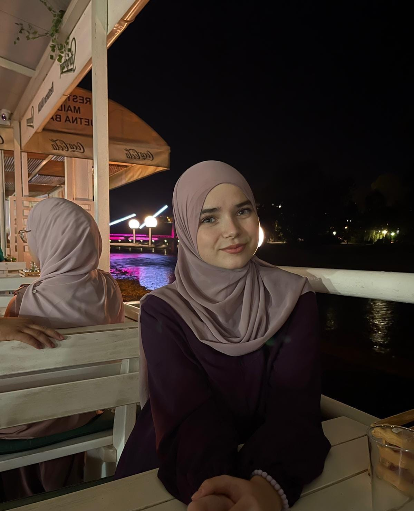

Bašić Nejla
Age: 19
City/Country: Zenica, Bosnia and Herzegovina

Motivation: "I believe that every small action can lead to big changes. It’s important to start somewhere, even if it’s within your local community."
Projects: Nejla has organized multiple community-based initiatives to support youth education and environmental awareness in her city.
Values: Passion and persistence are the core values that drive Nejla to continuously strive for improvement in her work and community.
Goals: She hopes to create a network of changemakers across Bosnia, empowering more young people to take part in positive changes.
Advice: "Don’t underestimate the power of collaboration. Together, we can achieve far more than we can alone."
Interests: Nejla enjoys organizing events, mentoring younger peers, and exploring innovative solutions for everyday challenges.
Contact:
- Instagram: nejla.basic